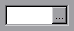
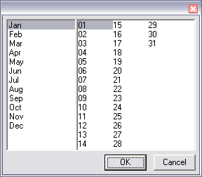

Uses ChooseField to display a field with a choose button on the right side. The button will bring up a MonthDayControl in a dialog. Choosing OK from the dialog will fill in the selection from the MonthDayControl into the Field. Cancelling from the dialog will not modify the fields contents.
For example:
Window(#(ChooseMonthDay))
Would display:
and clicking on the "..." button would display:
See also: MonthDayControl